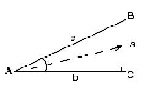
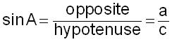
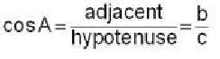
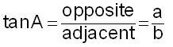
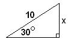
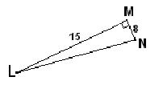

<html>

<head>
<meta http-equiv="Content-Type" content="text/html; charset=windows-1252">
<meta name="GENERATOR" content="Microsoft FrontPage 4.0">
<meta name="ProgId" content="FrontPage.Editor.Document">
<title>Trig functions in a right triangle</title>
</head>

<body>

<p><b style="mso-bidi-font-weight:normal"><span style="font-size:12.0pt;mso-bidi-font-size:10.0pt;font-family:Arial;mso-fareast-font-family:
&quot;Times New Roman&quot;;color:black;mso-ansi-language:EN-US;mso-fareast-language:
EN-US;mso-bidi-language:HE"><!--[if gte vml 1]><v:shapetype id="_x0000_t75"
 coordsize="21600,21600" o:spt="75" o:preferrelative="t" path="m@4@5l@4@11@9@11@9@5xe"
 filled="f" stroked="f">
 <v:stroke joinstyle="miter"/>
 <v:formulas>
  <v:f eqn="if lineDrawn pixelLineWidth 0"/>
  <v:f eqn="sum @0 1 0"/>
  <v:f eqn="sum 0 0 @1"/>
  <v:f eqn="prod @2 1 2"/>
  <v:f eqn="prod @3 21600 pixelWidth"/>
  <v:f eqn="prod @3 21600 pixelHeight"/>
  <v:f eqn="sum @0 0 1"/>
  <v:f eqn="prod @6 1 2"/>
  <v:f eqn="prod @7 21600 pixelWidth"/>
  <v:f eqn="sum @8 21600 0"/>
  <v:f eqn="prod @7 21600 pixelHeight"/>
  <v:f eqn="sum @10 21600 0"/>
 </v:formulas>
 <v:path o:extrusionok="f" gradientshapeok="t" o:connecttype="rect"/>
 <o:lock v:ext="edit" aspectratio="t"/>
</v:shapetype><v:shape id="_x0000_i1025" type="#_x0000_t75" style='width:122pt;
 height:30pt'>
 <v:imagedata src="../../../../../../DOCUME~1/DONCOH~1/LOCALS~1/Temp/msohtml1/01/clip_image001.wmz"
  o:title=""/>
</v:shape><![endif]--><!--[if gte vml 1]><v:shapetype id="_x0000_t75"
 coordsize="21600,21600" o:spt="75" o:preferrelative="t" path="m@4@5l@4@11@9@11@9@5xe"
 filled="f" stroked="f">
 <v:stroke joinstyle="miter"/>
 <v:formulas>
  <v:f eqn="if lineDrawn pixelLineWidth 0"/>
  <v:f eqn="sum @0 1 0"/>
  <v:f eqn="sum 0 0 @1"/>
  <v:f eqn="prod @2 1 2"/>
  <v:f eqn="prod @3 21600 pixelWidth"/>
  <v:f eqn="prod @3 21600 pixelHeight"/>
  <v:f eqn="sum @0 0 1"/>
  <v:f eqn="prod @6 1 2"/>
  <v:f eqn="prod @7 21600 pixelWidth"/>
  <v:f eqn="sum @8 21600 0"/>
  <v:f eqn="prod @7 21600 pixelHeight"/>
  <v:f eqn="sum @10 21600 0"/>
 </v:formulas>
 <v:path o:extrusionok="f" gradientshapeok="t" o:connecttype="rect"/>
 <o:lock v:ext="edit" aspectratio="t"/>
</v:shapetype><v:shape id="_x0000_i1025" type="#_x0000_t75" style='width:122pt;
 height:30pt'>
 <v:imagedata src="../../../../../../DOCUME~1/DONCOH~1/LOCALS~1/Temp/msohtml1/01/clip_image001.wmz"
  o:title=""/>
</v:shape><![endif]-->
</span></b></p>
<h1 align="center" style="text-align:center"><span style="font-family:Arial"><font size="5" color="#800080">Trig
functions in a right triangle</font><o:p>
</o:p>
</span></h1>
<p class="MsoNormal" style="tab-stops:.5in 1.0in 1.5in 2.0in 2.5in 3.0in 3.5in 4.0in 4.5in 5.0in 5.5in 6.0in" align="center"><span style="font-family:Arial"><o:p>
&nbsp;</span><b><span style="font-size:18.0pt;
mso-bidi-font-size:10.0pt;font-family:Arial">Soh Cah Toa</span></b><span style="font-family:Arial"></o:p>
</span></p>
<p class="MsoNormal"><span style="font-family:Arial">One thing that stands out
from my high school geometry class 100 years ago is<o:p>
</o:p>
</span></p>
<p class="MsoNormal"><span style="mso-spacerun: yes; font-family: Arial">&nbsp;</span><b><span style="font-size:18.0pt;
mso-bidi-font-size:10.0pt;font-family:Arial">Soh Cah Toa</span></b><span style="font-family:Arial">
. Which one reads as: <o:p>
</o:p>
</span></p>
<p class="MsoNormal"><span style="mso-bidi-font-size: 10.0pt; font-family: Arial"><font size="3">the</font></span><span style="font-size:18.0pt;mso-bidi-font-size:10.0pt;
font-family:Arial"><b> S</b></span><span style="font-family:Arial">in (sine) of
an angle is the<span style="mso-spacerun:yes">&nbsp; </span></span><b><span style="font-size:18.0pt;
mso-bidi-font-size:10.0pt;font-family:Arial">o</span></b><span style="font-family:Arial">pposite
side over the </span><b><span style="font-size:18.0pt;mso-bidi-font-size:10.0pt;font-family:Arial">h</span></b><span style="font-family:Arial">ypotenuse,
<o:p>
</o:p>
</span></p>
<p class="MsoNormal"><span style="mso-bidi-font-size: 10.0pt; font-family: Arial"><font size="3">the
</font></span><b><span style="font-size:18.0pt;mso-bidi-font-size:10.0pt;
font-family:Arial">C</span></b><span style="font-family:Arial">os (cosine) of an
angle is the </span><b><span style="font-size:18.0pt;mso-bidi-font-size:10.0pt;font-family:Arial">a</span></b><span style="font-family:Arial">djacent
side over the </span><b><span style="font-size:18.0pt;mso-bidi-font-size:10.0pt;font-family:Arial">h</span></b><span style="font-family:Arial">ypotenuse,
and <o:p>
</o:p>
</span></p>
<p class="MsoNormal"><span style="mso-bidi-font-size: 10.0pt; font-family: Arial"><font size="3">the
</font></span><b><span style="font-size:18.0pt;mso-bidi-font-size:10.0pt;
font-family:Arial">T</span></b><span style="font-family:Arial">an (tangent) is
the </span><b><span style="font-size:18.0pt;mso-bidi-font-size:10.0pt;font-family:Arial">o</span></b><span style="font-family:Arial">pposite
side over the </span><b><span style="font-size:18.0pt;mso-bidi-font-size:10.0pt;font-family:Arial">a</span></b><span style="font-family:Arial">djacent
side.<o:p>
</o:p>
</span><span style="font-family:Arial"></o:p>
</span></p>
<p class="MsoNormal"><b style="mso-bidi-font-weight:normal"><u><span style="font-size:14.0pt;font-family:Arial">This
discussion applies to right triangles only</span></u></b><span style="font-family:Arial">.
By definition, a triangle has 3 sides. To name the side opposite angle A, just
go from the vertex A, out the middle of the angle (see the dashed line in the
diagram below) till you hit the side opposite it, which is side BC or
alternatively, side a. The hypotenuse is always the side opposite the right
angle. If C is the right angle, then AB or c, is the hypotenuse. The third side
must be the adjacent side, AC or b. Notice that the side opposite angle B is b
and the side adjacent to angle B is a. the hypotenuse remains AB or c.<o:p>
</o:p>
</span></p>
<p class="MsoNormal" align="center" style="margin-left:.25in;text-align:center;
tab-stops:list .5in"><span style="font-family:Arial"><span style="position:
relative;top:5.0pt;mso-text-raise:-5.0pt"><!--[if gte vml 1]><v:shapetype id="_x0000_t75"
 coordsize="21600,21600" o:spt="75" o:preferrelative="t" path="m@4@5l@4@11@9@11@9@5xe"
 filled="f" stroked="f">
 <v:stroke joinstyle="miter"/>
 <v:formulas>
  <v:f eqn="if lineDrawn pixelLineWidth 0"/>
  <v:f eqn="sum @0 1 0"/>
  <v:f eqn="sum 0 0 @1"/>
  <v:f eqn="prod @2 1 2"/>
  <v:f eqn="prod @3 21600 pixelWidth"/>
  <v:f eqn="prod @3 21600 pixelHeight"/>
  <v:f eqn="sum @0 0 1"/>
  <v:f eqn="prod @6 1 2"/>
  <v:f eqn="prod @7 21600 pixelWidth"/>
  <v:f eqn="sum @8 21600 0"/>
  <v:f eqn="prod @7 21600 pixelHeight"/>
  <v:f eqn="sum @10 21600 0"/>
 </v:formulas>
 <v:path o:extrusionok="f" gradientshapeok="t" o:connecttype="rect"/>
 <o:lock v:ext="edit" aspectratio="t"/>
</v:shapetype><v:shape id="_x0000_i1025" type="#_x0000_t75" style='width:9pt;
 height:16pt' o:ole="" o:bullet="t">
 <v:imagedata src="../../../../../../DOCUME~1/DONCOH~1/LOCALS~1/Temp/msohtml1/01/clip_image001.wmz"
  o:title=""/>
</v:shape><![endif]-->
 </span><!--[if gte mso 9]><xml>
 <o:OLEObject Type="Embed" ProgID="Equation" ShapeID="_x0000_i1025"
  DrawAspect="Content" ObjectID="_1330166717">
 </o:OLEObject>
</xml><![endif]-->
<!--[if gte vml 1]><v:shape id="_x0000_i1030" type="#_x0000_t75"
 style='width:118pt;height:73.5pt'>
 <v:imagedata src="../../../../../../DOCUME~1/DONCOH~1/LOCALS~1/Temp/msohtml1/01/clip_image003.jpg"
  o:title="trigoppside"/>
</v:shape><![endif]-->
<o:p>
</o:p>
</span></p>
<p class="MsoNormal" style="margin-left:.25in;tab-stops:list .5in"><span style="font-family:Arial"><span style="position:relative;top:5.0pt;mso-text-raise:
-5.0pt"><!--[if gte vml 1]><v:shape id="_x0000_i1026" type="#_x0000_t75"
 style='width:9pt;height:16pt' o:ole="" o:bullet="t">
 <v:imagedata src="../../../../../../DOCUME~1/DONCOH~1/LOCALS~1/Temp/msohtml1/01/clip_image001.wmz"
  o:title=""/>
</v:shape><![endif]-->
</span><!--[if gte mso 9]><xml>
 <o:OLEObject Type="Embed" ProgID="Equation" ShapeID="_x0000_i1026"
  DrawAspect="Content" ObjectID="_1330166718">
 </o:OLEObject>
</xml><![endif]-->
<o:p>
</o:p>
</span></p>
<table class="MsoTableGrid" border="1" cellspacing="0" cellpadding="0" style="margin-left:.7in;border-collapse:collapse;border:none;mso-border-alt:
 solid windowtext .5pt;mso-yfti-tbllook:191;mso-padding-alt:0in 5.4pt 0in 5.4pt;
 mso-border-insideh:.5pt solid windowtext;mso-border-insidev:.5pt solid windowtext">
  <tr style="mso-yfti-irow:0;mso-yfti-lastrow:yes">
    <td width="414" valign="top" style="width:207.0pt;border:solid windowtext 1.0pt;
  mso-border-alt:solid windowtext .5pt;padding:0in 5.4pt 0in 5.4pt">
      <blockquote>
        <p class="MsoNormal"><span style="font-family:Arial"><span style="mso-spacerun:yes">&nbsp;</span><b style="mso-bidi-font-weight:normal"><!--[if gte vml 1]><v:shape
   id="_x0000_i1027" type="#_x0000_t75" style='width:122pt;height:30pt'>
   <v:imagedata src="../../../../../../DOCUME~1/DONCOH~1/LOCALS~1/Temp/msohtml1/01/clip_image005.wmz"
    o:title=""/>
  </v:shape><![endif]-->
        </b></span>&nbsp;&nbsp;&nbsp;&nbsp;&nbsp;&nbsp;&nbsp;&nbsp;&nbsp;&nbsp;&nbsp;&nbsp;&nbsp;&nbsp;&nbsp;&nbsp;&nbsp;&nbsp;&nbsp;&nbsp;&nbsp;&nbsp;&nbsp;&nbsp;&nbsp;
        </p>
        <p class="MsoNormal"><span style="font-family:Arial"><b style="mso-bidi-font-weight:normal"><o:p>
        </o:p>
        </b></span></p>
        <p class="MsoNormal"><span style="font-family:Arial"><b style="mso-bidi-font-weight: normal; font-family: Arial"></b></span></p>
        <p class="MsoNormal">&nbsp;</p>
        <p class="MsoNormal" style="tab-stops:list .5in"><span style="font-family: Arial">&nbsp;</span><span style="font-family:Arial"></o:p>
        </span></p>
      </blockquote>
    </td>
    <td width="387" valign="top" style="width:193.5pt;border:solid windowtext 1.0pt;
  border-left:none;mso-border-left-alt:solid windowtext .5pt;mso-border-alt:
  solid windowtext .5pt;padding:0in 5.4pt 0in 5.4pt">
      <p class="MsoNormal" style="tab-stops:list .5in"><span style="font-family:Arial"><span style="position:relative;top:78.0pt;mso-text-raise:-78.0pt"><!--[if gte vml 1]><v:shape
   id="_x0000_i1028" type="#_x0000_t75" style='width:151pt;height:162pt' o:ole="">
   <v:imagedata src="../../../../../../DOCUME~1/DONCOH~1/LOCALS~1/Temp/msohtml1/01/clip_image011.wmz"
    o:title=""/>
  </v:shape><![endif]-->
      </span></span></p>
      <p class="MsoNormal" style="tab-stops:list .5in"><span style="position: relative; top: 78.0pt; mso-text-raise: -78.0pt; font-family: Arial">&nbsp;&nbsp;&nbsp;&nbsp;&nbsp;
      </span><span style="font-family:Arial"><!--[if gte mso 9]><xml>
   <o:OLEObject Type="Embed" ProgID="Equation.DSMT4" ShapeID="_x0000_i1028"
    DrawAspect="Content" ObjectID="_1330166719">
   </o:OLEObject>
  </xml><![endif]-->
      <o:p>
      </o:p>
      </span></p>
    </td>
  </tr>
</table>
<p class="MsoNormal" style="margin-left:.25in;tab-stops:list .5in"><span style="font-family:Arial"><o:p>
&nbsp;</o:p>
</span></p>
<p class="MsoNormal"><span style="font-family:Arial"><span style="mso-spacerun:yes">&nbsp;&nbsp;&nbsp;
</span>Notice that<span style="mso-spacerun:yes">&nbsp;&nbsp; </span>sin A = cos
B . The word </span><u style="text-underline:thick"><span style="mso-bidi-font-size:12.0pt;font-family:
Arial">co</span></u><span style="font-family:Arial">sine comes from the </span><u style="text-underline:thick"><span style="mso-bidi-font-size:12.0pt;font-family:
Arial">co</span></u><span style="font-family:Arial">mplement of the angle. Two
angles are </span><u style="text-underline:thick"><span style="mso-bidi-font-size:
12.0pt;font-family:Arial">co</span></u><span style="font-family:Arial">mplementary
if the add to 90' and in the case above<span style="mso-spacerun:yes">&nbsp; </span>A
+ B = <span style="mso-spacerun:yes">&nbsp;</span>90'. If A = 20' <span style="mso-spacerun:yes">&nbsp;</span>and
B = 70', then sin 20' = cos 70', and the sin 40' = cos 50', and sin A' =
cos (90'-A).<o:p>
</o:p>
</span></p>
<hr>
<p class="MsoNormal"><span style="mso-bidi-font-size:12.0pt;font-family:Arial;
position:relative;top:-11.0pt;mso-text-raise:11.0pt">2. Solve for x:</span><span style="font-family:Arial"><span style="mso-spacerun:yes">&nbsp;&nbsp;&nbsp;
</span><!--[if gte vml 1]><v:shape
 id="_x0000_i1032" type="#_x0000_t75" style='width:88.5pt;height:56.5pt'>
 <v:imagedata src="../../../../../../DOCUME~1/DONCOH~1/LOCALS~1/Temp/FrontPageTempDir/wpe17.gif"
  o:title="solveforx"/>
</v:shape><![endif]-->
<span style="mso-spacerun:yes">&nbsp;</span><o:p>
</o:p>
</span></p>
<p class="MsoNormal"><span style="font-family:Arial"><span style="mso-spacerun:yes">&nbsp;&nbsp;&nbsp;&nbsp;
</span>Given: a right triangle, the hypotenuse is 10 m, the angle shown is 30'<o:p>
</o:p>
</span></p>
<p class="MsoNormal"><span style="font-family:Arial"><span style="mso-spacerun:yes">&nbsp;&nbsp;&nbsp;&nbsp;&nbsp;
</span>sin 30' = x/10<span style="mso-spacerun:yes">&nbsp;&nbsp; </span>(sine =
<b style="mso-bidi-font-weight:normal">o</b>pp/<b style="mso-bidi-font-weight:normal">h</b>ypotenuse)
, then multiply both sides by 10 to get<o:p>
</o:p>
</o:p>
</span></p>
<p class="MsoNormal"><span style="font-family:Arial"><span style="mso-spacerun:yes">&nbsp;&nbsp;&nbsp;&nbsp;&nbsp;
</span>x = 10*sin 30'<span style="mso-spacerun:yes">&nbsp;&nbsp; </span>On your
calculator enter 10*sin(30) then ENTER (make sure the angle&nbsp; is in degrees
rather than radians). <o:p>
</o:p>
</span></p>
<p class="MsoNormal"><span style="font-family:Arial"><o:p>
&nbsp;</o:p>
</span>&nbsp;&nbsp;&nbsp;&nbsp; <span style="font-family:Arial">x = <b style="mso-bidi-font-weight:normal">5
m<span style="mso-spacerun:yes">&nbsp;&nbsp; </span>ANSWER</b><o:p>
</o:p>
</span></p>
<p class="MsoNormal"><span style="font-family:Arial"><o:p>
&nbsp;</o:p>
</span></p>
<p class="MsoNormal"><span style="font-family:Arial">3.<span style="mso-spacerun:yes">&nbsp;
</span>Find the sine, cosine, and tangent of angles <b style="mso-bidi-font-weight:normal">L</b>
and <b style="mso-bidi-font-weight:
normal">N</b>. Use Pythagoras to find <b style="mso-bidi-font-weight:normal">LN</b>
first<o:p>
</o:p>
</span></p>
<p class="MsoNormal"><span style="font-family:Arial"><o:p>
&nbsp;</o:p>
</span></p>
<p class="MsoNormal" align="center" style="text-align:center"><span style="font-family:Arial"><!--[if gte vml 1]><v:shape id="_x0000_i1033" type="#_x0000_t75"
 style='width:121.5pt;height:70.5pt'>
 <v:imagedata src="../../../../../../DOCUME~1/DONCOH~1/LOCALS~1/Temp/FrontPageTempDir/wpe18.gif"
  o:title="#2 triangle"/>
</v:shape><![endif]-->
<o:p>
</o:p>
</span></p>
<p class="MsoNormal" align="center" style="text-align:center"><b style="mso-bidi-font-weight:
normal"><span style="font-family:Arial">LN</span><sup><span style="mso-bidi-font-size:12.0pt;font-family:Arial">2
</span></sup></b>= <b style="mso-bidi-font-weight:normal">8</b><b style="mso-bidi-font-weight:
normal"><sup><span style="mso-bidi-font-size:12.0pt;font-family:Arial">2 </span></sup></b>+
<b style="mso-bidi-font-weight:normal">15</b><b style="mso-bidi-font-weight:
normal"><sup><span style="mso-bidi-font-size:12.0pt;font-family:Arial">2 </span></sup></b>=
64 + 225 = 289<o:p>
</o:p>
<span style="font-family:Arial"></o:p>
</span></p>
<p class="MsoNormal" align="center" style="text-align:center"><b style="mso-bidi-font-weight:
normal"><span style="font-family:Arial">LN</span><sup><span style="mso-bidi-font-size:12.0pt;font-family:Arial">2
</span></sup></b>= 289</p>
<p class="MsoNormal" align="center" style="text-align:center"><b style="mso-bidi-font-weight:
normal"><span style="font-family:Arial">LN = Sqrt(289) = 17<o:p>
</o:p>
</span></b></p>
<p class="MsoNormal" align="center" style="text-align:center"><b style="mso-bidi-font-weight:
normal"><span style="font-family:Arial"><o:p>
&nbsp;</o:p>
</span></b></p>
<table class="MsoTableGrid" border="1" cellspacing="0" cellpadding="0" style="margin-left:77.4pt;border-collapse:collapse;border:none;mso-border-alt:
 solid windowtext .5pt;mso-yfti-tbllook:191;mso-padding-alt:0in 5.4pt 0in 5.4pt;
 mso-border-insideh:.5pt solid windowtext;mso-border-insidev:.5pt solid windowtext">
  <tr style="mso-yfti-irow:0;mso-yfti-lastrow:yes">
    <td width="639" valign="top" style="width:319.5pt;border:solid windowtext 1.0pt;
  mso-border-alt:solid windowtext .5pt;padding:0in 5.4pt 0in 5.4pt">
      <p class="MsoNormal"><span style="mso-spacerun:yes">&nbsp;&nbsp;&nbsp;&nbsp;&nbsp;&nbsp;&nbsp;&nbsp;&nbsp;&nbsp;&nbsp;
      </span><b style="mso-bidi-font-weight:
  normal">sin L =</b> <span style="mso-bidi-font-size:12.0pt;font-family:Arial;
  mso-bidi-font-family:&quot;Times New Roman&quot;"><span style="position:relative;
  top:13.0pt;mso-text-raise:-13.0pt"><!--[if gte vml 1]><v:shape id="_x0000_i1034"
   type="#_x0000_t75" style='width:18pt;height:35pt' o:ole="">
   <v:imagedata src="../../../../../../DOCUME~1/DONCOH~1/LOCALS~1/Temp/msohtml1/01/clip_image015.wmz"
    o:title=""/>
  </v:shape><![endif]-->
      </span><span style="position: relative; top: 13.0pt; mso-text-raise: -13.0pt">8/17</span><span style="mso-spacerun:yes">&nbsp;&nbsp;&nbsp;&nbsp;&nbsp;&nbsp;&nbsp;&nbsp;&nbsp;&nbsp;&nbsp;&nbsp;&nbsp;&nbsp;&nbsp;&nbsp;&nbsp;&nbsp;&nbsp;&nbsp;&nbsp;&nbsp;&nbsp;</span></span><b style="mso-bidi-font-weight:normal">sin
      N =</b> <span style="mso-bidi-font-size:
  12.0pt;font-family:Arial;mso-bidi-font-family:&quot;Times New Roman&quot;"><span style="mso-spacerun:yes">&nbsp;15/17</span><span style="position:relative;top:13.0pt;
  mso-text-raise:-13.0pt"><!--[if gte vml 1]><v:shape id="_x0000_i1035" type="#_x0000_t75"
   style='width:19pt;height:35pt' o:ole="">
   <v:imagedata src="../../../../../../DOCUME~1/DONCOH~1/LOCALS~1/Temp/msohtml1/01/clip_image017.wmz"
    o:title=""/>
  </v:shape><![endif]-->
      </span><!--[if gte mso 9]><xml>
   <o:OLEObject Type="Embed" ProgID="Equation.DSMT4" ShapeID="_x0000_i1035"
    DrawAspect="Content" ObjectID="_1330166721">
   </o:OLEObject>
  </xml><![endif]-->
      <o:p>
      </o:p>
      </span></p>
      <p class="MsoNormal"><span style="mso-bidi-font-size:12.0pt;font-family:Arial;
  mso-bidi-font-family:&quot;Times New Roman&quot;"><o:p>
      &nbsp;</o:p>
      </span></p>
      <p class="MsoNormal"><span style="mso-bidi-font-size:12.0pt;font-family:Arial;
  mso-bidi-font-family:&quot;Times New Roman&quot;"><o:p>
      &nbsp;</o:p>
      </span></p>
      <p class="MsoNormal"><span style="mso-bidi-font-size:12.0pt;font-family:Arial;
  mso-bidi-font-family:&quot;Times New Roman&quot;"><span style="mso-spacerun:yes">&nbsp;&nbsp;&nbsp;&nbsp;&nbsp;&nbsp;&nbsp;&nbsp;&nbsp;&nbsp;&nbsp;
      </span><b style="mso-bidi-font-weight:
  normal">cos L =</b> <span style="position:relative;top:13.0pt;mso-text-raise:
  -13.0pt"><!--[if gte vml 1]><v:shape id="_x0000_i1036" type="#_x0000_t75"
   style='width:19pt;height:35pt' o:ole="">
   <v:imagedata src="../../../../../../DOCUME~1/DONCOH~1/LOCALS~1/Temp/msohtml1/01/clip_image019.wmz"
    o:title=""/>
  </v:shape><![endif]-->
      </span><span style="mso-spacerun:yes">15/17&nbsp;&nbsp;&nbsp;&nbsp;&nbsp;&nbsp;&nbsp;&nbsp;&nbsp;&nbsp;&nbsp;&nbsp;&nbsp;&nbsp;&nbsp;&nbsp;&nbsp;&nbsp;&nbsp;&nbsp;</span><b style="mso-bidi-font-weight:
  normal">co</b></span><b style="mso-bidi-font-weight:normal">s N =</b> <span style="mso-bidi-font-size:12.0pt;font-family:Arial;mso-bidi-font-family:&quot;Times New Roman&quot;"><span style="position:relative;top:13.0pt;mso-text-raise:-13.0pt"><!--[if gte vml 1]><v:shape
   id="_x0000_i1037" type="#_x0000_t75" style='width:18pt;height:35pt' o:ole="">
   <v:imagedata src="../../../../../../DOCUME~1/DONCOH~1/LOCALS~1/Temp/msohtml1/01/clip_image015.wmz"
    o:title=""/>
  </v:shape><![endif]-->
      </span><span style="position: relative; top: 13.0pt; mso-text-raise: -13.0pt">8/17</span><!--[if gte mso 9]><xml>
   <o:OLEObject Type="Embed" ProgID="Equation.DSMT4" ShapeID="_x0000_i1037"
    DrawAspect="Content" ObjectID="_1330166723">
   </o:OLEObject>
  </xml><![endif]-->
      <span style="mso-spacerun:yes">&nbsp;&nbsp;</span><o:p>
      </o:p>
      </span></p>
      <p class="MsoNormal"><span style="mso-bidi-font-size:12.0pt;font-family:Arial;
  mso-bidi-font-family:&quot;Times New Roman&quot;"><o:p>
      &nbsp;</o:p>
      </span></p>
      <p class="MsoNormal"><span style="mso-bidi-font-size:12.0pt;font-family:Arial;
  mso-bidi-font-family:&quot;Times New Roman&quot;"><o:p>
      &nbsp;</o:p>
      </span></p>
      <p class="MsoNormal"><span style="mso-bidi-font-size:12.0pt;font-family:Arial;
  mso-bidi-font-family:&quot;Times New Roman&quot;"><span style="mso-spacerun:yes">&nbsp;&nbsp;&nbsp;&nbsp;&nbsp;&nbsp;&nbsp;&nbsp;&nbsp;&nbsp;&nbsp;&nbsp;
      </span><b style="mso-bidi-font-weight:
  normal">tan L =</b> <span style="position:relative;top:16.0pt;mso-text-raise:
  -16.0pt"><!--[if gte vml 1]><v:shape id="_x0000_i1038" type="#_x0000_t75"
   style='width:23pt;height:38pt' o:ole="">
   <v:imagedata src="../../../../../../DOCUME~1/DONCOH~1/LOCALS~1/Temp/msohtml1/01/clip_image020.wmz"
    o:title=""/>
  </v:shape><![endif]-->
      8/15</span><!--[if gte mso 9]><xml>
   <o:OLEObject Type="Embed" ProgID="Equation.DSMT4" ShapeID="_x0000_i1038"
    DrawAspect="Content" ObjectID="_1330166724">
   </o:OLEObject>
  </xml><![endif]-->
      <span style="mso-spacerun:yes">&nbsp;&nbsp;&nbsp;&nbsp;&nbsp;&nbsp;&nbsp;&nbsp;&nbsp;&nbsp;&nbsp;&nbsp;&nbsp;&nbsp;&nbsp;&nbsp;&nbsp;&nbsp;&nbsp;&nbsp;&nbsp;&nbsp;</span><b style="mso-bidi-font-weight:
  normal">tan N =</b> <span style="position:relative;top:14.0pt;mso-text-raise:
  -14.0pt"><!--[if gte vml 1]><v:shape id="_x0000_i1039" type="#_x0000_t75"
   style='width:20pt;height:36pt' o:ole="">
   <v:imagedata src="../../../../../../DOCUME~1/DONCOH~1/LOCALS~1/Temp/msohtml1/01/clip_image022.wmz"
    o:title=""/>
  </v:shape><![endif]-->
      </span><span style="position: relative; top: 14.0pt; mso-text-raise: -14.0pt">15/8</span><!--[if gte mso 9]><xml>
   <o:OLEObject Type="Embed" ProgID="Equation.DSMT4" ShapeID="_x0000_i1039"
    DrawAspect="Content" ObjectID="_1330166725">
   </o:OLEObject>
  </xml><![endif]-->
      <b style="mso-bidi-font-weight:normal"><o:p>
      </o:p>
      </b></span></p>
    </td>
  </tr>
</table>
<p class="MsoNormal"><o:p>
&nbsp;</o:p>
</p>
<p class="MsoNormal"><span style="font-family:Arial">To find <b style="mso-bidi-font-weight:
normal">angle L</b>, use the calculator <o:p>
</o:p>
</span></p>
<p class="MsoNormal" style="margin-left:2.0in;text-indent:.5in"><span style="font-family:Arial"><b style="mso-bidi-font-weight: normal; font-family: Arial">angle
L = </b><b style="mso-bidi-font-weight:normal">sin</b></span><b style="mso-bidi-font-weight:normal"><sup><span style="mso-bidi-font-size:12.0pt;
font-family:Arial">-1</span></sup></b>(8/17) ENTER<span style="mso-spacerun:yes">&nbsp;&nbsp;
</span>28<span style="font-family:Arial">' answer</span><o:p>
</o:p>
</p>
<p class="MsoNormal"><span style="font-family:Arial"><span style="mso-tab-count:
2">&nbsp;&nbsp;&nbsp;&nbsp;&nbsp;&nbsp;&nbsp;&nbsp;&nbsp;&nbsp;&nbsp;&nbsp;&nbsp;&nbsp;&nbsp;&nbsp;&nbsp;&nbsp;&nbsp;&nbsp;
</span><b style="mso-bidi-font-weight:normal">'sin</b></span><b style="mso-bidi-font-weight:normal"><sup><span style="mso-bidi-font-size:12.0pt;
font-family:Arial">-1</span></sup></b>(8/15)' is read as, 'the angle whose
sine is 8/15' (which equals 28<span style="font-family:Arial">')<o:p>
</o:p>
</span></p>
<blockquote>
  <p class="MsoNormal" align="left"><span style="font-size:14.0pt;font-family:Arial"><b><font color="#008000">OR</font></b><span style="mso-spacerun:yes"><b><font color="#008000">
  </font></b> </span><o:p>
  </o:p>
  </span></p>
</blockquote>
<p class="MsoNormal"><span style="font-family:Arial">To find <b style="mso-bidi-font-weight:
normal">angle L</b>,<span style="mso-spacerun:yes">&nbsp; </span>use the
calculator <o:p>
</o:p>
</span></p>
<p class="MsoNormal" style="margin-left:2.0in;text-indent:.5in"><span style="font-family:Arial"><b style="mso-bidi-font-weight: normal; font-family: Arial">angle
L = </b></span><b style="mso-bidi-font-weight:normal"><span style="font-family:Arial">cos</span><sup><span style="mso-bidi-font-size:12.0pt;
font-family:Arial">-1</span></sup></b>(15/17) ENTER<span style="mso-spacerun:yes">&nbsp;&nbsp;
</span>28<span style="font-family:Arial">' answer<o:p>
</o:p>
</span></p>
<p class="MsoNormal"><span style="font-size:14.0pt;font-family:Arial"><span style="mso-spacerun:yes">&nbsp;
</span><o:p>
</o:p>
</span><span style="font-family:Arial"><o:p>
</o:p>
</span></p>
<p class="MsoNormal"><span style="font-family:Arial">To find <b style="mso-bidi-font-weight:
normal">angle </b><b style="mso-bidi-font-weight: normal; font-family: Arial">N</b>,<span style="mso-spacerun:yes">&nbsp;
</span>use the calculator <o:p>
</o:p>
</span></p>
<p class="MsoNormal" align="center"><span style="font-family:Arial"><b style="mso-bidi-font-weight: normal; font-family: Arial">&nbsp;&nbsp;&nbsp;&nbsp;&nbsp;&nbsp;&nbsp;&nbsp;&nbsp;&nbsp;&nbsp;&nbsp;&nbsp;&nbsp;&nbsp;&nbsp;&nbsp;&nbsp;&nbsp;&nbsp;&nbsp;&nbsp;&nbsp;&nbsp;&nbsp;&nbsp;&nbsp;&nbsp;
angle N = </b><b style="mso-bidi-font-weight:normal">tan</b></span><b style="mso-bidi-font-weight:normal"><sup><span style="mso-bidi-font-size:12.0pt;font-family:Arial">-1</span></sup></b>(15/8)
ENTER<span style="mso-spacerun:yes">&nbsp;&nbsp; </span><span style="mso-spacerun: yes">6</span>2<span style="font-family:Arial">'
answer</span><o:p>
</o:p>
</p>

</body>

</html>
